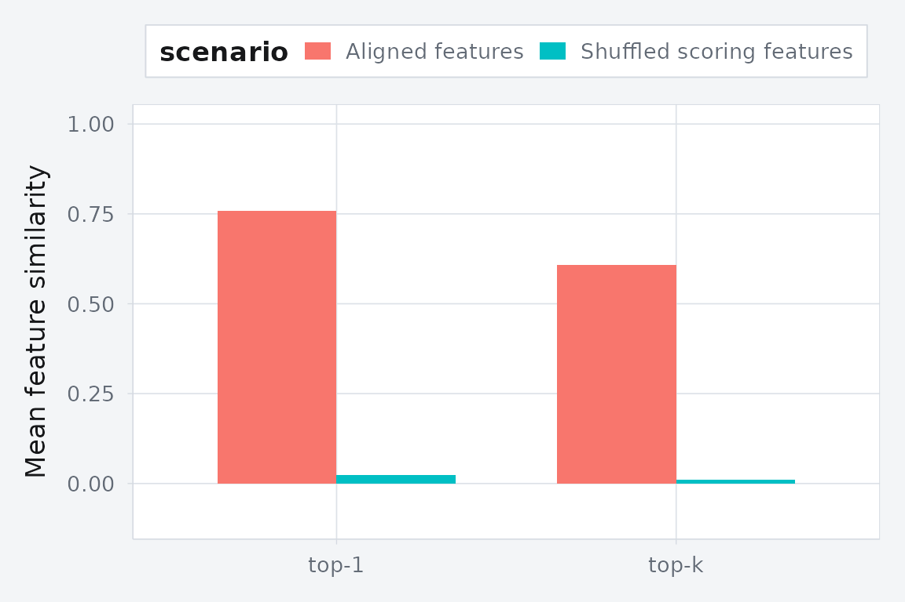

Features, Correspondences, and Predictive Performance
Source:vignettes/features-and-predictive-performance.Rmd
features-and-predictive-performance.RmdSuppose domain has an observed matrix . Each row is a sample. Now suppose the same rows also have external feature vectors, collected in a second matrix . Those row-level features might come from text embeddings, anatomy, metadata, or another modality entirely.
That distinction matters:
- columns of
X_dare the measured variables used to fit the alignment; - rows of
F_dare sample-level descriptors used to define semantic correspondences and held-out evaluation; - a cross-domain feature correspondence matrix between domains
aandbis thereforenrow(a) x nrow(b), notncol(a) x ncol(b).
In this vignette we will:
- build row-level feature correspondences for three domains;
- keep those correspondences sparse;
- fit SSMA on training rows only;
- project held-out rows with
oos_predict(); - score predictive performance with
cv_alignment_rows().
The predictive target is not “reconstruct the feature vector.” It is: does a held-out row land near rows in other domains whose row-level features are similar?
Simulate three observed domains plus row-level features
We will simulate three observed domains from a shared latent state. Separately, we will generate an external feature matrix for each domain. Those feature vectors are attached to the rows of each dataset and are only used for correspondence construction and evaluation.
set.seed(20260420)
n <- 72
latent_dim <- 3
feature_dim <- 5
Z <- matrix(rnorm(n * latent_dim), n, latent_dim)
A1 <- matrix(rnorm(latent_dim * 8), latent_dim, 8)
A2 <- matrix(rnorm(latent_dim * 6), latent_dim, 6)
A3 <- matrix(rnorm(latent_dim * 9), latent_dim, 9)
observed <- list(
a = Z %*% A1 + matrix(rnorm(n * 8, sd = 0.08), n, 8),
b = Z %*% A2 + matrix(rnorm(n * 6, sd = 0.08), n, 6),
c = Z %*% A3 + matrix(rnorm(n * 9, sd = 0.08), n, 9)
)
feature_basis <- matrix(rnorm(latent_dim * feature_dim), latent_dim, feature_dim)
feature_signal <- Z %*% feature_basis
features_true <- list(
a = feature_signal + matrix(rnorm(n * feature_dim, sd = 0.04), n, feature_dim),
b = feature_signal + matrix(rnorm(n * feature_dim, sd = 0.04), n, feature_dim),
c = feature_signal + matrix(rnorm(n * feature_dim, sd = 0.04), n, feature_dim)
)
domain_summary <- data.frame(
domain = names(observed),
n_rows = vapply(observed, nrow, integer(1)),
observed_columns = vapply(observed, ncol, integer(1)),
feature_columns = vapply(features_true, ncol, integer(1))
)
domain_summary
#> domain n_rows observed_columns feature_columns
#> a a 72 8 5
#> b b 72 6 5
#> c c 72 9 5The observed matrices go into a hyperdesign. The feature
matrices stay outside the fit.
hd <- hyperdesign(list(
a = multidesign(observed$a, data.frame(row_id = seq_len(n))),
b = multidesign(observed$b, data.frame(row_id = seq_len(n))),
c = multidesign(observed$c, data.frame(row_id = seq_len(n)))
))
hd
#>
#> === Hyperdesign Object ===
#>
#> Number of blocks: 3
#>
#> +- Block 1 (a) -----------------
#> | Dimensions: 72 x 8
#> | Design Variables: row_id
#> | Design Structure:
#> | * row_id: 72 levels (1, 2, 3...71, 72)
#> | Column Design: Present
#> | Variables: .index
#>
#> +- Block 2 (b) -----------------
#> | Dimensions: 72 x 6
#> | Design Variables: row_id
#> | Design Structure:
#> | * row_id: 72 levels (1, 2, 3...71, 72)
#> | Column Design: Present
#> | Variables: .index
#>
#> +- Block 3 (c) -----------------
#> | Dimensions: 72 x 9
#> | Design Variables: row_id
#> | Design Structure:
#> | * row_id: 72 levels (1, 2, 3...71, 72)
#> | Column Design: Present
#> | Variables: .index
#>
#> =======================
#> What does feature_correspondences() mean?
The helper in this vignette has two layers:
-
feature_correspondence_matrix(Fa, Fb)builds a sparse matrix whose rows index datasetaand whose columns index datasetb. -
feature_correspondences()converts the nonzero entries of those sparse matrices into the edge table expected byssma_align().
For domains a and b, the matrix below is
nrow(a) x nrow(b). Nonzero entry (i, j) means:
row i in domain a should be treated as
semantically close to row j in domain b.
W_ab <- feature_correspondence_matrix(
features_true$a,
features_true$b,
top_k = 3,
mutual = TRUE,
min_similarity = 0.6
)
dim(W_ab)
#> [1] 72 72
Matrix::nnzero(W_ab)
#> [1] 161
round(Matrix::nnzero(W_ab) / prod(dim(W_ab)), 4)
#> [1] 0.0311
head(summary(W_ab))
#> 72 x 72 sparse Matrix of class "dgCMatrix", with 161 entries
#> i j x
#> 1 1 1 0.9999124
#> 2 18 1 0.9986160
#> 3 63 1 0.9870367
#> 4 2 2 0.9975204
#> 5 3 3 0.9989185
#> 6 20 3 0.9828414
stopifnot(all(dim(W_ab) == c(nrow(observed$a), nrow(observed$b))))
stopifnot(methods::is(W_ab, "sparseMatrix"))Even with only 72 rows per domain, the kept edges are already a small
fraction of the full bipartite matrix. In larger problems you would keep
top_k small or build approximate row-neighbour candidates
directly, but the geometry is the same: a sparse
row-by-row correspondence matrix.
corr_full <- feature_correspondences(
features_true,
top_k = 3,
mutual = TRUE,
min_similarity = 0.6
)
head(corr_full)
#> domain_i index_i domain_j index_j weight source
#> 1 1 1 2 1 0.9999124 feature
#> 2 1 18 2 1 0.9986160 feature
#> 3 1 63 2 1 0.9870367 feature
#> 4 1 2 2 2 0.9975204 feature
#> 5 1 3 2 3 0.9989185 feature
#> 6 1 20 2 3 0.9828414 feature
table(paste(names(features_true)[corr_full$domain_i],
names(features_true)[corr_full$domain_j],
sep = " -> "))
#>
#> a -> b a -> c b -> c
#> 161 162 163
stopifnot(all(corr_full$index_i >= 1L & corr_full$index_i <= n))
stopifnot(all(corr_full$index_j >= 1L & corr_full$index_j <= n))This table is what ssma_align() actually consumes. The
weight column keeps the cosine similarity, so stronger
row-level feature matches get stronger cross-domain edges.
End-to-end inference on held-out rows
We will hold out a few rows from domain a, rebuild the
feature-derived correspondences on the training rows only, fit SSMA,
then project the held-out rows into the aligned space.
fold1 <- multidesign::cv_rows(hd, rows = list(list(a = 1:8)))[[1]]
analysis <- fold1$analysis
assessment <- fold1$assessment
analysis_ids <- lapply(analysis, function(block) block$design$row_id)
features_analysis <- Map(
function(F, ids) F[ids, , drop = FALSE],
features_true[names(analysis_ids)],
analysis_ids
)
corr_analysis <- feature_correspondences(
features_analysis,
top_k = 3,
mutual = TRUE,
min_similarity = 0.6
)
fit <- ssma_align(
analysis,
correspondences = corr_analysis,
preproc = multivarious::center(),
ncomp = 2,
control = ssma_align_control(
knn = 8,
rank_per_domain = 12,
verbose = FALSE
)
)
nrow(corr_analysis)
#> [1] 462
stopifnot(nrow(corr_analysis) > 0)Now project the held-out rows from domain a with
oos_predict(), retrieve their nearest neighbours in the
training rows of domains b and c, and score
those matches in the external feature space.
query_scores <- oos_predict(fit, assessment$a$x, side = "a")
score_blocks <- score_row_blocks(analysis)
target_scores_b <- fit$s[score_blocks$b, , drop = FALSE]
target_scores_c <- fit$s[score_blocks$c, , drop = FALSE]
nn_b <- latent_knn(query_scores, target_scores_b, k = 3L)
nn_c <- latent_knn(query_scores, target_scores_c, k = 3L)
query_ids <- assessment$a$design$row_id
target_ids_b <- analysis$b$design$row_id
target_ids_c <- analysis$c$design$row_id
feature_sim_b <- row_cosine_similarity(
features_true$a[query_ids, , drop = FALSE],
features_true$b[target_ids_b, , drop = FALSE]
)
feature_sim_c <- row_cosine_similarity(
features_true$a[query_ids, , drop = FALSE],
features_true$c[target_ids_c, , drop = FALSE]
)
retrieval_summary <- rbind(
data.frame(
query_row = query_ids,
target_domain = "b",
retrieved_row = target_ids_b[nn_b[, 1]],
feature_similarity = feature_sim_b[cbind(seq_along(query_ids), nn_b[, 1])],
stringsAsFactors = FALSE
),
data.frame(
query_row = query_ids,
target_domain = "c",
retrieved_row = target_ids_c[nn_c[, 1]],
feature_similarity = feature_sim_c[cbind(seq_along(query_ids), nn_c[, 1])],
stringsAsFactors = FALSE
)
)
head(retrieval_summary, 8)
#> query_row target_domain retrieved_row feature_similarity
#> 1 1 b 38 -0.8740264
#> 2 2 b 2 0.9975204
#> 3 3 b 3 0.9989185
#> 4 4 b 7 0.6290790
#> 5 5 b 20 0.6033854
#> 6 6 b 38 0.8531745
#> 7 7 b 7 0.9969800
#> 8 8 b 1 0.5987475
aggregate(feature_similarity ~ target_domain, retrieval_summary, mean)
#> target_domain feature_similarity
#> 1 b 0.6004724
#> 2 c 0.7154646
stopifnot(all(is.finite(retrieval_summary$feature_similarity)))
stopifnot(mean(retrieval_summary$feature_similarity) > 0.6)That is the full prediction loop:
- fit the alignment on observed training matrices;
- project new rows with
oos_predict(); - retrieve nearby rows in the other domains;
- ask whether those retrieved rows have similar row-level features.
Cross-validated predictive performance
cv_alignment_rows() automates the same logic
fold-by-fold. The crucial detail is that the correspondence table must
be rebuilt inside fit_fn() from the training rows only, so
held-out rows never leak into the fit.
rows <- list(
list(a = 1:6),
list(b = 7:12),
list(c = 13:18),
list(a = 19:24),
list(b = 25:30),
list(c = 31:36)
)
fit_fn <- function(analysis) {
analysis_ids <- lapply(analysis, function(block) block$design$row_id)
feature_blocks <- Map(
function(F, ids) F[ids, , drop = FALSE],
features_true[names(analysis_ids)],
analysis_ids
)
corr <- feature_correspondences(
feature_blocks,
top_k = 3,
mutual = TRUE,
min_similarity = 0.6
)
manifoldalign::ssma_align(
analysis,
correspondences = corr,
preproc = multivarious::center(),
ncomp = 2,
control = manifoldalign::ssma_align_control(
knn = 8,
rank_per_domain = 12,
verbose = FALSE
)
)
}
cv_signal <- manifoldalign::cv_alignment_rows(
hd,
rows = rows,
fit_fn = fit_fn,
features = features_true,
k = 3,
target_pool = "analysis"
)
cv_signal$scores[, c(
".fold",
"mean_top1_similarity",
"mean_topk_similarity",
"n_queries",
"n_pairs"
)]
#> # A tibble: 6 × 5
#> .fold mean_top1_similarity mean_topk_similarity n_queries n_pairs
#> <int> <dbl> <dbl> <dbl> <dbl>
#> 1 1 0.711 0.563 12 2
#> 2 2 0.957 0.585 12 2
#> 3 3 0.601 0.484 12 2
#> 4 4 0.527 0.582 12 2
#> 5 5 0.827 0.569 12 2
#> 6 6 0.921 0.862 12 2
stopifnot(all(is.finite(cv_signal$scores$mean_top1_similarity)))
stopifnot(all(is.finite(cv_signal$scores$mean_topk_similarity)))
stopifnot(mean(cv_signal$scores$mean_top1_similarity) > 0.7)The score still has the same interpretation as the manual example above. For each held-out query row, the model projects that row into the aligned space, retrieves nearby rows from the target domains, and measures the agreement of their external row-level feature vectors.
A negative control for the scoring rule
To isolate the evaluation step, we can keep the fitted alignment procedure the same and shuffle the row-level feature vectors used only for scoring. If the metric is meaningful, held-out agreement should drop.
set.seed(20260421)
features_shuffled <- lapply(features_true, function(F) {
F[sample(seq_len(nrow(F))), , drop = FALSE]
})
cv_shuffled <- manifoldalign::cv_alignment_rows(
hd,
rows = rows,
fit_fn = fit_fn,
features = features_shuffled,
k = 3,
target_pool = "analysis"
)
comparison <- rbind(
aggregate_cv(cv_signal, "Aligned features"),
aggregate_cv(cv_shuffled, "Shuffled scoring features")
)
comparison
#> scenario metric value
#> 1 Aligned features top-1 0.75735046
#> 2 Aligned features top-k 0.60740808
#> 3 Shuffled scoring features top-1 0.02336278
#> 4 Shuffled scoring features top-k 0.01084015
stopifnot(
mean(cv_signal$scores$mean_top1_similarity) >
mean(cv_shuffled$scores$mean_top1_similarity) + 0.15
)
Held-out feature agreement drops when the row-level feature vectors are shuffled at scoring time.
Design takeaway
If external features are only there to define supervision and evaluation, keep them outside the fit and use them in this order:
- build sparse row-to-row correspondence matrices between domains;
- convert those matrices into a correspondence edge table for
ssma_align(); - fit on training rows only;
- project held-out rows with
oos_predict()and score cross-domain retrieval withcv_alignment_rows().
If the external features are themselves a modality you want represented in the embedding, add them as another domain. That is a different model. In that case the matching feature rows need to be held out from the fit as well.